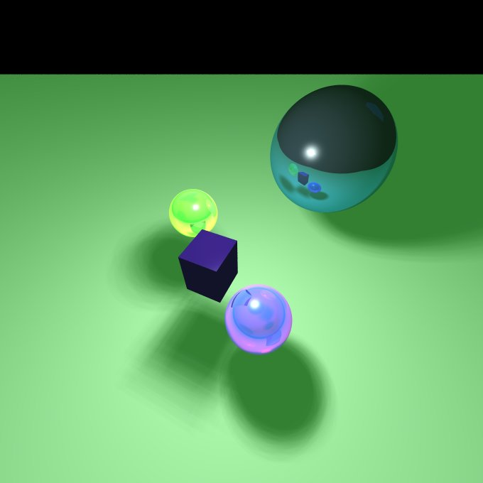
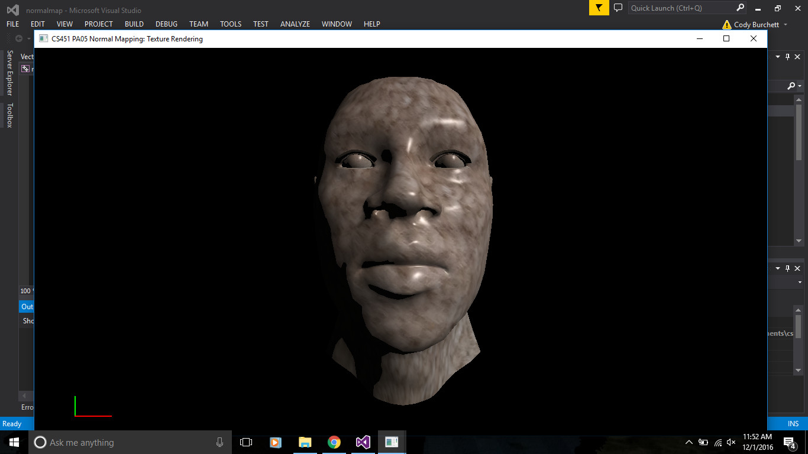
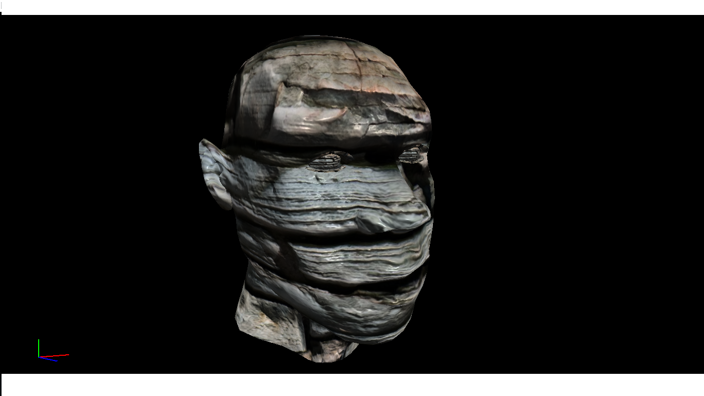

A capture the flag game built in Unity 5 where the player and his AI teammates face off against an enemy team in an attempt to capture the other team's flag. They must lay traps to fend off the other team while avoiding or disarming the opposing teams traps in order to score.
A kangaroo-mouse themed tower defense game where the goal is to defend your main tower from the invading feral rats by laying towers of cheese to prevent them from reaching the tower. During the day you collect cheese pieces and use them to build your defenses until night falls and the enemy rats attack while you help your towers defend the main tower.
A ray tracer renderer created using C++ capable of rendering triangle meshes and includes reflection, refraction, soft shadows, and diffuse and specular shading.

Human head rendered using openGL includes texture and per pixel spot light shading using GLSL shaders.

Human head rendered using openGL and includes texture mapping and normal mapping using GLSL shaders.

A heightmap mesh modeling program that can be used to create meshes, select and move the vertices of the mesh, and subdivide or fractalize the mesh.
A boids flocking simulation created in Unreal Engine 4 using C++.
A* pathfinding built in the Open Source Graphics Engine(OGRE) using C++.
A simple game of shooting fish into a barrel showing off ballistic projectile physics and collision detection in Unreal Engine 4 using C++.
A 2D 2 player Co-op adventure game created by GADIG during the 2015-2016 school year built using Unity 5.
A 2D adventure game involving a player moving through separate levels fighting enemies and collecting new powers built by GADIG during the Fall 2016 semester using Unity 5.